2021
MARCHÉ DU PONT
ACSA / AISC Steel Design Competition
The “Marché du Pont” is proposed to be implemented in Montreal, in order to rejuvenate the northern tip of the Île Notre Dame and the Île Saint-Helene. The element of the market, or ‘bazaar’ on the bridge would serve as a community space, serving as a place for sellers throughout Montreal to rent booths to distribute their goods.
CONTEXT
ACSA / AISC Steel Design Competition
LOCATION
Ile Notre Dame, Montreal
SOFTWARE + TOOLS
Rhinoceros3D, Grasshopper (+Pufferfish), V-Ray, Photoshop, Illustrator
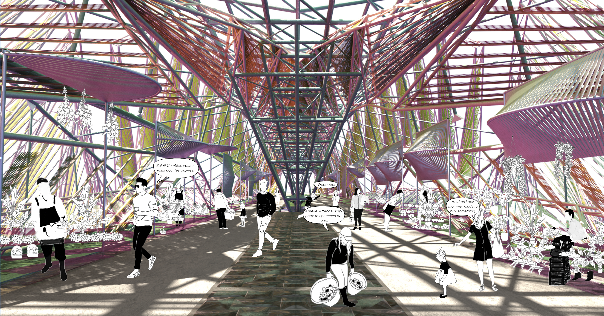

In 1863, Mr. Thomas Alcock, the East-Surrey member of parliament, proposed an alternative to the new bridges in the city of London. Mr. Alcock suggested providing market stalls built into the bridges and using the rent from these booths to offset the construction expenses for the infrastructure, rather than tolling the public. His idea, which he termed “Bazaar Bridge,” had many merits, allowing lower classes to afford the use of the infrastructure and providing walk-through traffic for the sellers. Ultimately, the city did not move forward with this idea. Instead, it was criticized in newspapers and rejected by the public.
Although seemingly revolutionary, incorporating buildings into spanning structures is not new. With the need and desire for multi-purpose infrastructure beginning to re-emerge, new typologies for public spaces need to be re-considered. Commercial programs may be viably incorporated into transit infrastructure. This holds the opportunity to both capitalize on the passage of potential buyers through the space and on the profit of rental spaces for local business owners in order to fund the existing infrastructure and others.
In anticipation of Expo 67, Montreal not only created the islands in the center of the city and built pavilions on them, but also built a monorail bridge, the Expo Express, which crossed over the water to the islands and then turned around at “La Ronde.” In the years following the event, much of the architecture and infrastructure was either deconstructed or left in disarray, including the Expo Express, which was largely dismantled, barring a portion which became the “Pont de la Concorde” and another bridging portion which remains abandoned in the water.
Although the Île Notre-Dame has since become a rowing and racing facility for the Olympics as well as a casino, while Île Sainte-Hélène houses the biodome and an amusement park, both islands fail to satisfy the everyday needs of the population. Save for special occasions, the islands remain largely deserted, especially the northern portion of Île Notre-Dame, which serves as a stockyard.
The implementation of the “Marché du Pont” on the Expo Express bridge remnant is intended to spur the passage of Montrealers between Île Notre-Dame and Île Sainte-Hélène, catalyzing not only beautification and reunification efforts but also the restoration of Expo 67 pavilions and artworks remaining on the site.
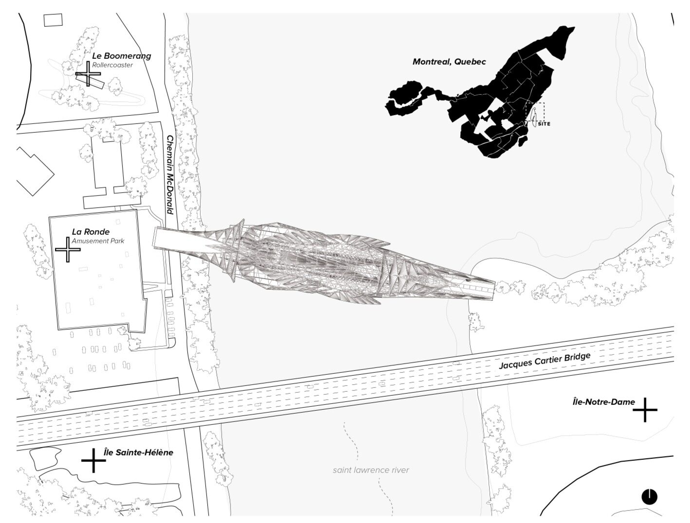
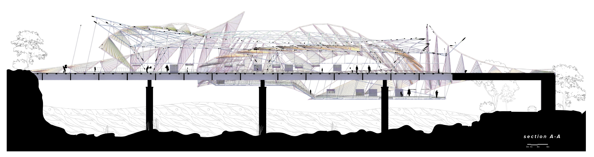
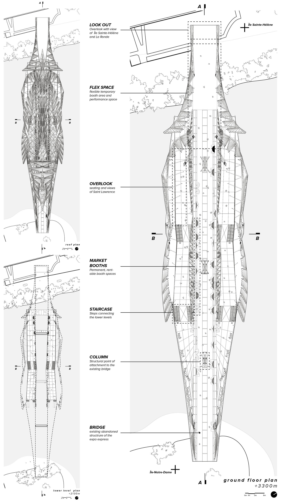
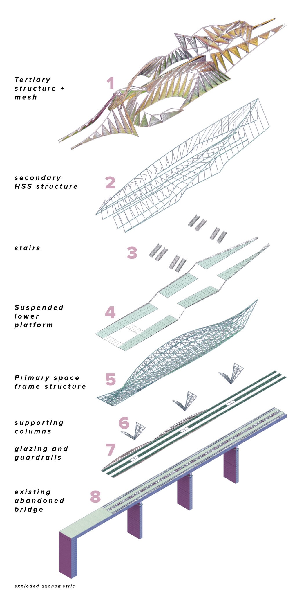
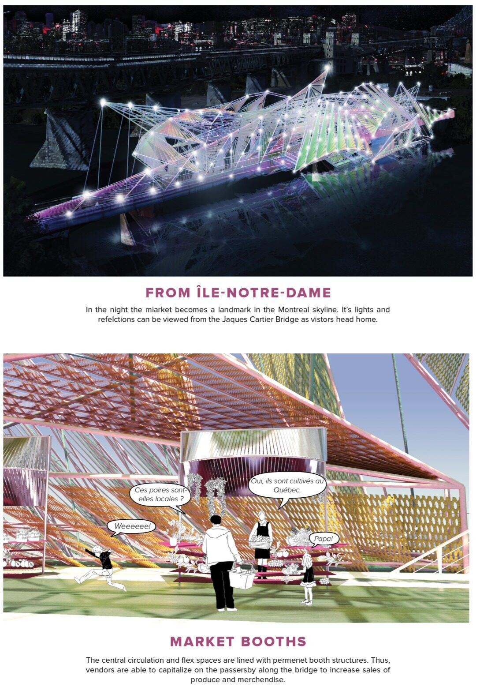
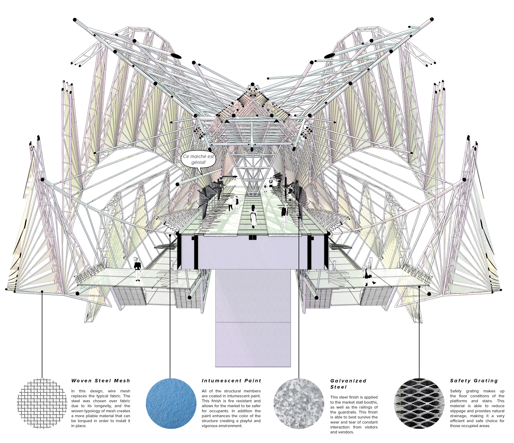
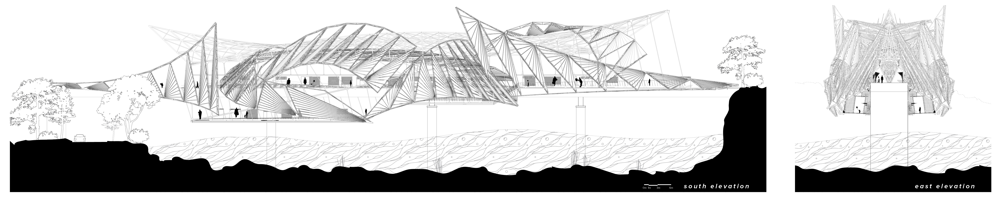
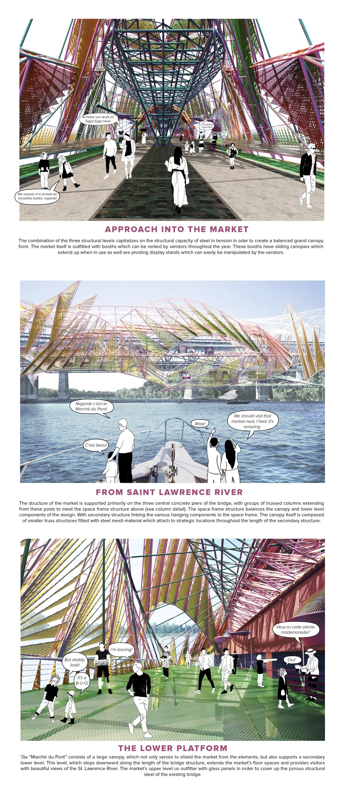
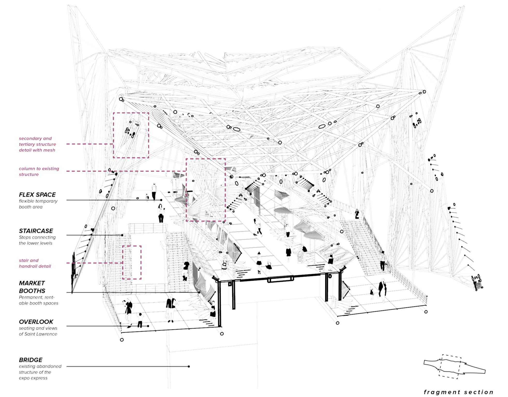
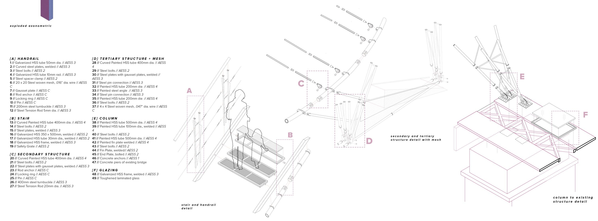